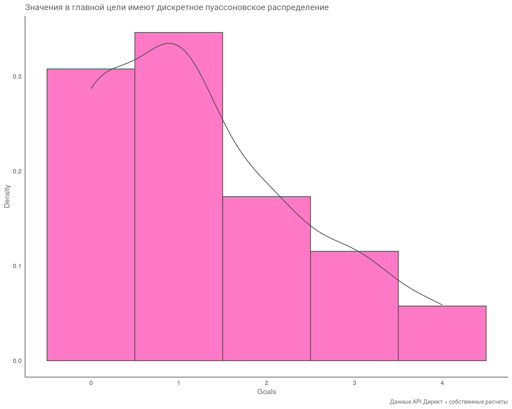
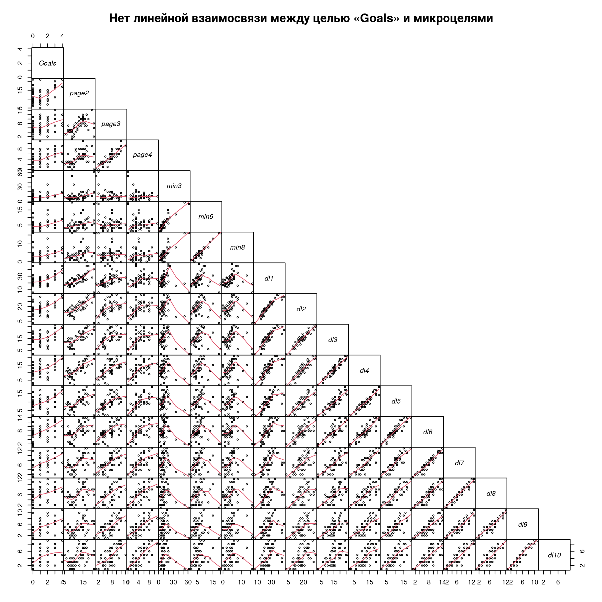
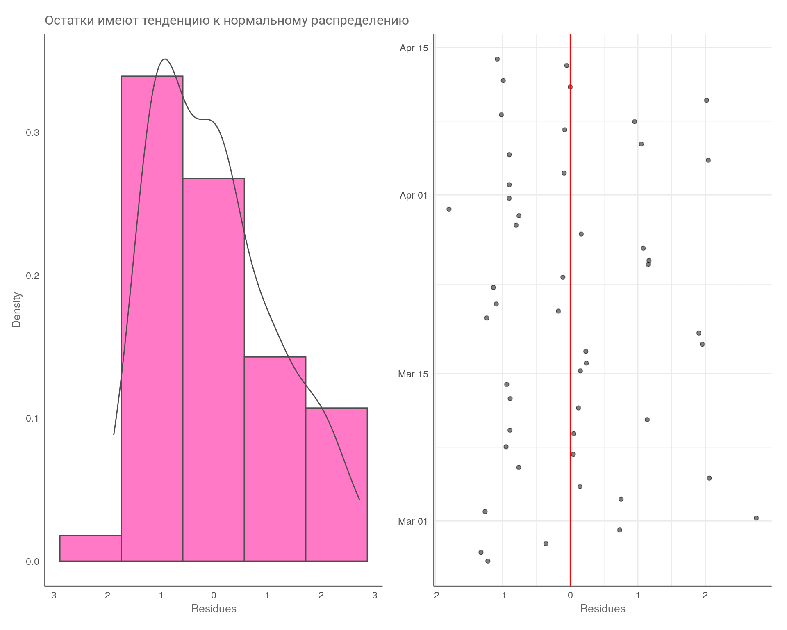
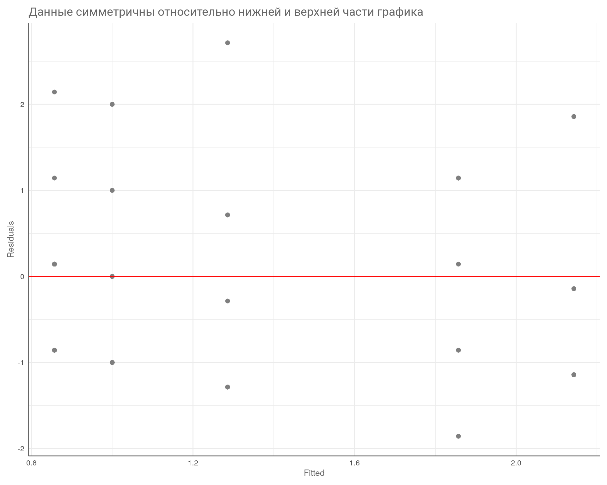

Код: Загрузка библиотек
# обработка данных
library(dplyr)
library(tidyr)
library(tibble)
library(ggpubr)
# отображение таблиц
library(DT)
library(gt)
# графика
library(ggplot2)
library(plotly)
# объединение графиков
library(patchwork)Часть 1. Корреляция и регрессия. Подробный разбор методологии с примерами
# обработка данных
library(dplyr)
library(tidyr)
library(tibble)
library(ggpubr)
# отображение таблиц
library(DT)
library(gt)
# графика
library(ggplot2)
library(plotly)
# объединение графиков
library(patchwork)Для кого
Серия статей из двух частей, посвященная теме корреляционного анализа, будет полезна специалистам, которые имеют опыт ведения рекламных кампаний и знакомы с основами статистики (и я имею в виду статистику, ту, что «Ложь, большая ложь и статистика», а не интерфейс в «Директе»).
Начинающие специалисты смогут изучить методологию и понять, с чего начать.
Есть возможность скачать таблицу с данными и воспроизвести процесс по шагам с помощью примеров (и такой-то матери) либо собственными силами в Excel.
Благодарю Полину Бондареву за код для целей «dl*». Код можно скачать, перейдя по ссылке в левом верхнем углу страницы под основными ссылками.
Подписывайтесь на мой ТГ-канал DDM & Ads
Проблема
В контексте рекламных кампаний в нишах B2B и сложных продуктов существует проблема с количеством обращений от потенциальных клиентов (лидов). Лиды поступают нестабильно и в небольшом количестве, что не позволяет обучить рекламную систему для достижения основных целей: звонки, отправка формы, обращение через виджеты. Даже если создать общую цель, которая объединяет все основные цели, их все равно может быть недостаточно.
Решение
Один из вариантов решения задачи — это обучение стратегии на микроцелях: просмотр страниц, время, проведенное на сайте, и специальные цели, которые передаются через собственный JavaScript-код.
Главные требования к микроцелям:
| Конверсии | Отклонение от истинного значения | Цена конверсии |
|---|---|---|
| < 25 | ± 20% | ± 40% |
| < 100 | ± 10% | ± 20% |
| < 400 | ± 5% | ± 10% |
| < 2500 | ± 2% | ± 4% |
| < 10 000 | ± 1% | ± 2% |
Статистическая значимость связана с ошибкой первого рода — найти подтверждение там, где её нет в реальности. За данную ошибку отвечает уровень достоверности — альфа (\(\alpha\)) и в тестах он обозначается как \(\text{p-value}\).
\(\text{p-value} < 0.05\) означает, что вероятность найти такие или еще более значимые отличия равна \(5\%\), т. е. в \(5\) случаях из \(100\) мы можем ошибиться.
Ниже перечислены шаги, как в целом проходит все исследование, от настройки до проверки результатов:
Первая часть статьи посвящена вопросам корреляционного и регрессионного анализов. Следующая часть будет полностью посвящена шестому шагу. Данная статья начинается с третьего шага, т. е. микроцели настроены и данные собраны.
Рассмотрим типы целей, которые участвуют в анализе.
| Глоссарий по макро- и микроцелям | |||||||
|---|---|---|---|---|---|---|---|
| Главные цели | Микроцели | ||||||
| Goals | Calls | B24 | Forms | eMails | page* | min* | dl* |
| Сумма главных целей (Calls + B24 + Forms + eMails) | Звонок | Отправка сообщения через виджит Б24 | Отправка формы с сайта | Клик или копирование email | Просмотрено 2, 3, 4 страницы | Проведено на сайте от 3, 6, 8 минут | Специальная многосоставная JS цель |
Рассмотрим таблицу с данными по макро- и микроцелям.
В таблице видно много пустых ячеек. Проверим по колонкам кол-во пропущенных значений.
# проверка на NA по столбцам
na_df <- df |>
reframe(
across(
where(is.numeric),
list(na = function(x, ...) sum(is.na(x)))
)
)
# строим график для анализа NA
na_df_plt <- na_df |>
pivot_longer(
cols = ends_with("na"),
names_to = "Name",
values_to = "Value"
) |>
ggplot(aes(x = Name, y = Value)) +
geom_col(fill = '#ff79c6') +
theme_minimal() +
labs(
title = "NA значения в разрезе целей",
x = NULL,
y = "Кол-во целей"
) +
theme(
plot.title = element_text(size = 12, color = "gray40"),
axis.title = element_text(size = 8, color = "gray50"),
axis.text = element_text(size = 8, color = "gray50"),
axis.text.x = element_text(angle = 90),
panel.grid = element_blank(),
plot.margin = ggplot2::margin(
t = 0.3,
r = 0.3,
b = 0.3,
l = 0.3,
"cm"
)
)
# создаем интерактивный график
plotly::ggplotly(na_df_plt)В данном примере дополнительные микроцели были настроены в конце февраля. Рассмотрим на графике, когда данные начали поступать стабильно и в достаточном кол-ве.
# преобразуем данные в длинный форма
plot_df <- df |>
pivot_longer(
cols = 2:ncol(df),
names_to = "Name",
values_to = "Value"
)
# строим график
ggplot(
plot_df,
aes(
x = Date ,
y = Value,
group = Name,
fill = Name)
) +
geom_col(na.rm = TRUE) +
scale_x_date(
date_breaks = "2 day",
date_labels = "%d.%m"
) +
theme_minimal() +
labs(
title = "Данные по целям поступают в нормальном объяёме с 24.02.24",
x = NULL,
y = "Кол-во целей",
fill = NULL
) +
theme(
plot.title = element_text(size = 14, color = "gray40"),
axis.title = element_text(size = 8, color = "gray50"),
axis.text = element_text(size = 7, color = "gray50"),
axis.text.x = element_text(angle = 90),
panel.grid = element_blank(),
legend.position = "top",
legend.justification = "left",
legend.box.spacing = unit(0.1, "cm"),
legend.text = element_text(size = 8, color = "gray50"),
plot.margin = ggplot2::margin(
t = 0.3,
r = 0.3,
b = 0.3,
l = 0.3,
"cm"
)
)
Данные начинают поступать в нормальном объеме с \(24.02.24\). Значит, сократим данные, взяв старт с указанной даты и до конца периода.
Вывод
Необходимо учитывать контекст ситуации. Важно понимать, чем объясняется появление пропущенных значений. В нашем случае NA значения в главных целях образовались в результате обработки данных и говорят они о том, что в эти дни были достигнуты микроконверсии, но не было главных целей. Поэтому удалить пропущенные значения в этом случае мы не можем, заменим на 0.
И ситуация, когда есть макроцель, но нет микроцели, нежелательна. Это говорит о том, что данные по микроцелям не поступали в эти дни. Такие строки можно удалить.
Уменьшим объем данных.
sf <- df |>
filter(Date >= "2024-02-24")
datatable(
sf,
rownames = FALSE,
class = 'display compact nowrap',
options = list(
buttons = c('csv', 'excel'),
pageLength = 10,
dom = 'Btpli',
language = list(url = '//cdn.datatables.net/plug-ins/1.13.6/i18n/ru.json'),
initComplete = JS(
"function(settings, json) {",
"$(this.api().table().header()).css({'background-color': '#7B7B7B', 'color': '#fff'});",
"}")
),
caption = htmltools::tags$caption(
style = 'caption-side: top; text-align: left;',
htmltools::h6('Таблица: Уменьшили кол-во NA значений')
)
)У нас остается 52 строки наблюдений, что вполне достаточно для анализа. Проверяем на кол-во пропущенных значений.
# проверка на NA по столбцам
na_df <- sf |>
reframe(
across(
where(is.numeric),
list(na = function(x, ...) sum(is.na(x)))
)
) |>
select(-c(Calls_na, B24_na, Forms_na, EMails_na))
# строим график для анализа NA
na_df_plt <- na_df |>
pivot_longer(
cols = ends_with("na"),
names_to = "Name",
values_to = "Value"
) |>
ggplot(aes(x = Name, y = Value)) +
geom_col(fill = '#ff79c6') +
theme_minimal() +
labs(
title = " NA значения по целям",
x = NULL,
y = "Кол-во целей"
) +
theme(
plot.title = element_text(size = 12, color = "gray40"),
axis.title = element_text(size = 8, color = "gray50"),
axis.text = element_text(size = 8, color = "gray50"),
axis.text.x = element_text(angle = 90),
panel.grid = element_blank(),
plot.margin = ggplot2::margin(
t = 0.3,
r = 0.3,
b = 0.3,
l = 0.3,
"cm"
)
)
# создаем интерактивный график
plotly::ggplotly(na_df_plt)Так намного лучше. У нас всего по 2 пропущенных значения в микроцелях, что не критично.
Сгруппируем данные по неделям и найдем подходящие цели: те, что в кол-ве больше 100, подойдут лучше всего. Группируем по неделям, так как опираемся на рекомендации Яндекса по кол-ву целей для обучения системы.
sf <- df |>
filter(Date >= "2024-02-24")
micro_sf <- sf |>
mutate(Week = clock::date_format(Date, format = "%W")) |>
reframe(
across(c(2:ncol(sf)), ~sum(., na.rm = TRUE)),
.by = c(Week)
) %>%
select(1,7:ncol(sf)) |>
slice(2:6)
gt(
micro_sf,
rowname_col = "Week"
) |>
tab_header(
title = "Подходящие микроцели группы dl*",
subtitle = "Сгруппированные данные по неделям"
) |>
data_color(
columns = 1:ncol(micro_sf),
fn = \(v) lapply(v, \(x) if (x < 30) "darkred" else if (x > 100) "darkgreen" else "grey"),
apply_to = "text"
)| Подходящие микроцели группы dl* | ||||||||||||||||
|---|---|---|---|---|---|---|---|---|---|---|---|---|---|---|---|---|
| Сгруппированные данные по неделям | ||||||||||||||||
| page2 | page3 | page4 | min3 | min6 | min8 | dl1 | dl2 | dl3 | dl4 | dl5 | dl6 | dl7 | dl8 | dl9 | dl10 | |
| 09 | 77 | 28 | 14 | 133 | 56 | 41 | 187 | 121 | 94 | 71 | 50 | 37 | 29 | 25 | 19 | 17 |
| 10 | 89 | 51 | 29 | 75 | 27 | 14 | 172 | 122 | 88 | 72 | 56 | 40 | 36 | 32 | 28 | 26 |
| 11 | 87 | 50 | 32 | 64 | 36 | 26 | 192 | 154 | 120 | 99 | 84 | 71 | 61 | 55 | 43 | 37 |
| 12 | 91 | 53 | 41 | 66 | 34 | 27 | 189 | 148 | 121 | 99 | 87 | 70 | 60 | 54 | 45 | 39 |
| 13 | 95 | 61 | 40 | 58 | 37 | 29 | 182 | 150 | 118 | 100 | 79 | 71 | 62 | 54 | 44 | 39 |
Вывод
Исходя из данных нашего первичного исследования особое внимание уделим микроцелям:
Данные цели поступают равномерно, в необходимом для нас объеме и по данным критериям подходят лучше всего, поэтому к ним особое внимание.
Есть проект, в котором я буду полезен? Обращайтесь! Контакты
Перед проведением анализа нам необходимо проверить два условия:
Распределение данных покажет нам, какой метод нужно применить для корреляционного анализа, например, метод Пирсона или непараметрический метод Спирмена.
Непараметрические методы — это методы, которые не требуют предположений о распределении данных или о параметрах этого распределения.
В отличие от параметрических методов, которые предполагают определенную форму распределения данных, непараметрические методы позволяют анализировать данные без этих предположений. Они основаны на ранжировании данных и использовании ранговых статистик, что делает их более гибкими и устойчивыми к выбросам.
Характер взаимосвязи целей покажет, стоит ли нам вообще брать микроцель для обучения стратегии.
Линейная взаимосвязь — это когда все наблюдаемые точки расположены максимально близко в доль выделенной линии. Если это так, то можно говорить о достаточно высокой корреляции между переменными. Например, ниже на графике мы видим стат. значимую сильную положительную корреляцию (\(R=0.95\)).
Если одна из переменных (целей) распределена ненормально, тогда мы должны применить непараметрический аналог теста. В первую очередь проверим главную цель «Goals». Проверять распределение будем с помощью теста Шапиро–Уилка и визуального анализа.
Тест Шапиро-Уилка анализирует нормальность распределения данных. Если \(\text{p-value}\) теста больше заданного уровня значимости (обычно \(0,05\)), то данные считаются нормально распределенными.
Если же \(\text{p-value}\) меньше заданного уровня значимости, то данные отклоняются от нормального распределения. Это означает, что для анализа таких данных следует использовать методы, которые не предполагают нормальности распределения, например, непараметрические тесты.
Проведем тест.
# вывод данных
sjPlot::tab_df(
shapiro.test(sf$Goals),
title = "Result test",
footnote = "Signif. codes: 0 ‘***’ 0.001 ‘**’ 0.01 ‘*’ 0.05 ‘.’ 0.1 ‘ ’ 1",
show.rownames = T,
digits = 5,
show.footnote = TRUE
)| statistic | p.value | method | data.name | |
| 0.78146 | 0.00001 | Shapiro-Wilk normality test | sf$Goals | |
| Signif. codes: 0 ‘***’ 0.001 ‘**’ 0.01 ‘*’ 0.05 ‘.’ 0.1 ‘ ’ 1 | ||||
По результатам теста делаем вывод, что наши значения по цели «Goals» отклоняются от нормального распределения, так как значение \(\text{p-value} < 0.05\).
Проведем визуальный анализ распределения значений по этой же цели.
# подготовим данные из основного фрейма
cor_df <- df |>
filter(Date >= "2024-02-24") %>%
select(2:ncol(.)) |>
relocate(Goals)
# замена NA на 0
cor_df[is.na(cor_df)] <- 0
## гистограма и плотность через библиотеку ggplot
ggplot(cor_df, aes(x = Goals))+
geom_histogram(
aes(y = after_stat(density)),
fill = "#ff79c6",
col = "gray30",
bins = 5
) +
geom_density(col = "gray30", lwd = .5) +
scale_x_continuous() +
theme_minimal() +
labs(
title = "Значения в главной цели имеют дискретное пуассоновское распределение",
caption = "Данные API Директ + собственные расчеты",
x = "Goals",
y = "Density"
) +
theme(
plot.title = element_text(size = 12, color = "gray40"),
plot.caption = element_text(size = 8, color = "gray40"),
axis.title = element_text(size = 10, color = "gray40"),
axis.line = element_line(colour = "gray40"),
panel.grid = element_blank()
)
Рассмотрим как распределены наши значения в разрезе недель.
## сравниваем распределения
df |>
mutate(Week = clock::date_format(Date, format = "%W")) |>
ggplot(aes(Goals, fill = Week)) +
geom_rug() +
geom_density(alpha = 0.7) +
scale_x_continuous(breaks = seq(0,10,1)) +
theme_minimal() +
labs(
title = "Распределение значений по главной цели в разрезе недель",
x = "Goals",
y = "Density"
) +
theme(
plot.title = element_text(size = 12, color = "gray40"),
axis.title = element_text(size = 8, color = "gray50"),
axis.text = element_text(size = 7, color = "gray50"),
panel.grid = element_blank(),
axis.line = element_line(colour = "gray40"),
legend.position = "top",
legend.justification = "left",
legend.box.spacing = unit(0.1, "cm"),
legend.title = element_text(size = 10, color = "gray50"),
legend.text = element_text(size = 8, color = "gray50"),
plot.margin = ggplot2::margin(
t = 0.3,
r = 0.3,
b = 0.3,
l = 0.3,
"cm"
)
)
Вывод
Значения в главной цели распределены ненормально, а это значит, корреляционный анализ будет проводиться методом Спирмана.
Если честно, то данное условие можно назвать желательным, но необязательным. На практике значения, полученные различными методами, не сильно отличаются, если только у вас не экстремально малое кол-во наблюдений. Гораздо важнее взаимосвязь макро- и микроцелей.
Напомню, что одно из требований к корреляционному анализу — это линейная взаимосвязь переменных (Tip 1). Проверим на графике, как связаны наши цели между собой.
pairs(
cor_df[, c(1, 6:21)],
gap = 0,
upper.panel = NULL,
font.labels = 3,
lower.panel = panel.smooth,
cex = 0.5,
cex.labels = 1,
main = "Нет линейной взаимосвязи между целью «Goals» и микроцелями"
)
Результат
На графике видим, что наша главная цель имеет нелинейную взаимосвязь со всеми микроцелями (идём глазами вниз по колонке «Goals»). Это значит:
Пробуем провести корреляционный анализ непараметрическим методом Спирмена с поправкой на множественные сравнения Бенджамини — Хохберга, так как у нас много переменных для сравнения.
Проблема множественных сравнений (multiple comparisons problem) в статистике возникает, когда одновременно анализируется большое количество статистических выводов или оценивается подмножество параметров, выбранных на основе наблюдаемых значений. То есть возрастает групповая вероятность ошибки первого рода (family-wise error rate) — вероятность ошибки первого рода для хотя бы одной из множества гипотез.
Чем больше количество сделанных выводов, тем выше вероятность обнаружения ложных корреляций или различий между группами. Это связано с тем, что при большом количестве сравнений увеличивается вероятность случайного обнаружения статистически значимых результатов, даже если они не имеют реального значения.
Например, если вы коррелируете 17 переменных друг с другом (это наш случай), то вы проверяете 136 гипотез о связи. Пять процентов из этих гипотез, то есть в среднем 6–7 гипотез у вас будут статистически значимыми, даже если никаких эффектов на самом деле нет!
Поэтому, если проверяется сразу много гипотез, то необходимо применять поправки на множественные сравнения. Эти поправки позволяют контролировать групповую вероятность ошибки первого рода на желаемом уровне.
# создаем матрицу p-value
df_psych <- cor_df |>
psych::corr.test(adjust = "BH", method = "spearman")
# создаем график
ggcorrplot::ggcorrplot(
corr = df_psych$r,
hc.order = FALSE,
type = "lower",
method = "square",
lab = TRUE,
lab_size = 2,
p.mat = df_psych$p,
pch.cex = 8,
tl.cex = 8,
pch.col = "red",
title = "Наблюдаме статистически значимую связь у целей «dl*»",
outline.color = "white",
lab_col = "gray20",
show.diag = TRUE
) +
theme(
plot.title = element_text(size = 12, color = "gray40"),
axis.text = element_text(color = "gray50"),
axis.text.x = element_text(angle = 90),
panel.grid = element_blank()
)
На что тут смотреть? Находим строку «Goals» на оси ординат (\(y\)) и идем взглядом по оси абсцисс. В первую очередь отбрасываем микроцели, которые перечеркнуты красным крестиком, — данные не прошли уровень \(\alpha\), т. е. статистически не значимы. Далее смотрим на силу связи по коэффициенту «Corr» — чем краснее и чем больше коэффициент, тем лучше.
Вывод
Микроцель «dl9» имеет наилучшие показатели по коэффициенту корреляции, но у неё небольшое количество достижений целей, в среднем 36. Поэтому обратим внимание на цель «dl6» (в среднем 58 в неделю).
Однако есть одно существенное «но»! Дело в том, что микроцель имеет коэффициент корреляции, равный \(0,47\), и если мы рассчитаем коэффициент детерминации \(R^2\) по формуле \(R^2 = 0,47^2\), то получим значение 0.22. Т. е. наша микроцель объясняет всего \(22\%\) дисперсии (изменчивости) главной цели. Это очень низкий показатель, и в целом я бы не стал брать такую цель для тестов.
Коэффициент детерминации (\(R^2\)) в статистике — это мера, которая показывает, насколько хорошо выбранная модель объясняет изменчивость данных. Он представляет собой долю дисперсии зависимой переменной, которая объясняется рассматриваемой моделью. Проще говоря, это процент вариации зависимой переменной (в нашем случае цель «Goals»), который может быть объяснен изменениями в независимой переменной (микроцель «dl6»).
Коэффициент детерминации принимает значения от \(0\) до \(1\), где \(0\) означает, что модель не объясняет никакой изменчивости данных, а \(1\) указывает на то, что модель полностью объясняет все изменения в зависимой переменной. Чем ближе значение \(R^2\) к \(1\), тем лучше модель соответствует данным.
На самом деле корреляционный анализ это частный случай простой линейной регрессионой модели.
То есть у нас уже есть все необходимые данные для принятия решения. Так зачем нужен регрессионный анализ?
Во-первых, мы сможем предсказывать значения в случае, если у нас микроцель имеет высокий коэффициент детерминации. Тем самым понять, устраивает ли нас результат по достижению главных целей или нет.
Во-вторых, если значение коэф. детерминации низкое, то мы можем попробовать найти связку микроцелей, которые будут хорошо объяснять изменчивость главной цели. Это большая и сложная тема, о которой я напишу в отдельной статье.
Как и с другими параметрическими методами, линейная регрессия имеет определенные допущения относительно используемых данных. Если они не соблюдаются, то все наши расчеты уровня значимости могут быть некорректными.
Для проведения регрессионного анализа наши данные должны соблюдать ряд требований:
Как отметили выше, необходимо, чтобы наша микроцель имела линейную взаимосвязь и объясняла как можно большую долю дисперсии (изменчивости) главной цели. Однако в ходе тестов выяснилось, что главная цель «Goals» не имеет линейной связи ни с одной из микроцелей. Что делать? Рассмотрим данные.
Ниже на графике показан характер взаимосвязи главной цели «Goals» и интересующей нас микроцели «dl6» с группировкой по дням.
# подготовим данные
lm_df <- df |>
filter(Date >= "2024-02-24") %>%
select(2:ncol(.)) |>
relocate(Goals)
# замена NA на 0
lm_df[is.na(lm_df)] <- 0
# строим график
ggplot(lm_df, aes(x = dl6, y = Goals)) +
geom_point(color = "gray50") +
geom_smooth(
method = 'loess',
color = "gray40",
linetype = "dashed",
size = .6,
se = FALSE
) +
geom_smooth(method = 'lm', color = "#ff79c6", se = FALSE) +
ggpubr::stat_cor(
label.sep = "\n",
label.x = 1,
label.y = 4,
color = "gray40"
) +
stat_regline_equation(
aes(label = paste(..eq.label.., ..rr.label.., sep = "~~~~")),
color = "gray40",
label.x = 1,
label.y = 3.7
) +
scale_x_continuous(breaks = seq(0, 20, 1)) +
theme_minimal()+
labs(
title = "Нелинейная связь",
x = "Микроцель: «dl6»",
y = "Цель: Goals"
) +
theme(
plot.title = element_text(size = 12, color = "gray40"),
axis.title = element_text(size = 8, color = "gray50"),
axis.text = element_text(size = 8, color = "gray50"),
panel.grid = element_blank(),
plot.margin = ggplot2::margin(
t = 0.3,
r = 0.3,
b = 0.3,
l = 0.3,
"cm"
)
)На графике видно, что с увеличением числа микроцелей мы все равно можем получить от 0 до 4 главных конверсий. То есть явно не видно, что с увеличением числа микроцелей увеличивается число главных целей.
В данном случае получается некий диапазон работы рекламной системы, который можно измерить с помощью контрольных карт Шухарта. Замерив диапазон, можем узнать мощность нашей рекламной системы и уже на основе этих данных ставить реальные KPI для исполнителей.
О контрольных картах я подробно написал в статье: Применяем ГОСТ стандарт РФ «Контрольные карты Шухарта» для оптимизация рекламных кампаний и других источников трафика
Попробуем сгруппировать наши данные по неделям.
# подготовим данные
lm_df_w <- df |>
filter(Date >= "2024-02-26") |>
mutate(
Week = clock::date_format(Date, format = "%W"),
across(where(is.numeric), \(x) replace_na(x, 0))
) |>
reframe(across(where(is.numeric), sum), .by = Week)
# строим график
ggplot(lm_df_w, aes(x = dl6, y = Goals)) +
geom_point(color = "gray50") +
geom_smooth(
method = 'loess',
color = "gray40",
linetype = "dashed",
linewidth = .6,
se = FALSE
) +
geom_smooth(method = 'lm', color = "#ff79c6", se = FALSE) +
ggpubr::stat_cor(
label.sep = "\n",
label.x = 1,
label.y = 15,
color = "gray40"
) +
stat_regline_equation(
aes(label = paste(..eq.label.., ..rr.label.., sep = "~~~~")),
color = "gray40",
label.x = 1,
label.y = 14
) +
theme_minimal() +
# scale_x_continuous(breaks = seq(0, 30, 1)) +
labs(
title = "Почти линейная, но не совсем",
x = "Микроцель: «dl6»",
y = "Цель: Goals"
) +
theme(
plot.title = element_text(size = 12, color = "gray40"),
axis.title = element_text(size = 8, color = "gray50"),
axis.text = element_text(size = 8, color = "gray50"),
panel.grid = element_blank(),
plot.margin = ggplot2::margin(
t = 0.3,
r = 0.3,
b = 0.3,
l = 0.3,
"cm"
)
)Сгруппировав данные по неделям, смогли объяснить 56% изменчивости главной цели, но при этом уровень \(\text{p-value}\) ухудшился и стал на уровне статистической тенденции, т. е. стал очень близок к тому, что мы не сможем отвергнуть нулевую гипотезу — независимости зависимой переменной «Goals» от предиктора «dl6».
Проще, проверяется допущение о том, что наши переменные никак не связаны между собой, и если значение \(\text{p-value}\) близко к 0,05, то это действительно может быть так. А если нет связи, значит, мы никак не сможем влиять на главную цель через микроцель.
Вывод
При анализе данных по дням линейной взаимосвязи не наблюдается, однако при группировке данных по неделям связь прослеживается, но с оговорками. Т. е. чисто математически связь улучшается, но насколько это верное решение, возможно выяснить только с помощью тестирования.
Проверим остальные критерии.
Остатки должны быть нормально распределены, а разброс ошибок должен не уменьшаться и не увеличиваться в зависимости от предсказанных значений. Это то, что называется гомоскедастичностью или гомогенностью (когда всё хорошо) и гетероскедастичностью или гетерогенностью (когда всё плохо).
Распределение остатков проверим либо с помощью теста Бартлетта, либо теста Левина. Проведем оба теста, сгруппировав данные по неделям, плюс визуализируем результаты. Обращаем внимание на значение \(\text{p-value}\) (Tip 2).
Тест Бартлетта для главной цели «Goals»
# подготовим данные к анализу
test_df <- df |>
filter(Date >= "2024-02-26") |>
mutate(
Week = clock::date_format(Date, format = "%W"),
across(where(is.numeric), \(x) replace_na(x, 0)),
Week = as.factor(Week)
) |>
slice(1:49)
# тест и вывод данных
sjPlot::tab_df(
bartlett.test(Goals ~ Week, test_df),
title = "Test Result",
show.rownames = T,
digits = 3
)| statistic | parameter | p.value | data.name | method |
| 3.425 | 6 | 0.754 | Goals by Week | Bartlett test of homogeneity of variances |
Тест Левина
# тест и вывод данных
sjPlot::tab_df(
with(test_df, car::leveneTest(Goals, Week)),
title = "Test Result",
show.rownames = T,
digits = 3
)| Row | Df | F.value | Pr..F. |
| group | 6 | 0.737 | 0.623 |
| 42 | NA | NA |
Тест Бартлетта для микроцели «dl6»
# тест и вывод данных
sjPlot::tab_df(
bartlett.test(dl6 ~ Week, test_df),
title = "Test Result",
show.rownames = T,
digits = 3
)| statistic | parameter | p.value | data.name | method |
| 2.531 | 6 | 0.865 | dl6 by Week | Bartlett test of homogeneity of variances |
Визуальный анализ распределения остатков.
model <- lm(Goals ~ Week, test_df)
test_df$res <- model$residuals
test_df$fit <- model$fitted.values
test_df$obs_num <- 1:nrow(test_df)
## normality of variables distributions
pl_err1 <- ggplot(
test_df,
aes(x = res)
) +
geom_histogram(
aes(y = after_stat(density)),
fill = "#ff79c6",
col = "gray30",
bins = 5
) +
geom_density(col = "gray30", lwd = .5) +
scale_x_continuous() +
theme_minimal() +
labs(
title = "Остатки имеют тенденцию к нормальному распределению",
x = "Residues",
y = "Density"
) +
theme(
plot.title = element_text(size = 12, color = "gray40"),
axis.title = element_text(size = 10, color = "gray40"),
axis.line = element_line(colour = "gray40"),
panel.grid = element_blank()
)
## normality of variables distributions 2
pl_err2 <- ggplot(
test_df,
aes(x = res, y = Date)
) +
geom_jitter(
width = 0.1,
alpha = 0.5
) +
geom_vline(xintercept = 0, col = 'red') +
theme_minimal() +
labs(
x = "Residues",
y = NULL
) +
theme(
axis.title = element_text(size = 10, color = "gray40"),
axis.line = element_line(colour = "gray40"),
plot.margin = ggplot2::margin(
t = 0.3,
r = 0.3,
b = 0.3,
l = 0.3,
"cm"
)
)
# объедением два графика
pl_err1 + pl_err2
Вывод
Все тесты показали тенденцию к нормальному распределению остатков, так как в тестах \(\text{p-value}\) больше значения 0,05.
Создадим график зависимости ошибок от предсказанных значений.
# Homoscedasticity
ggplot(test_df, aes(x = fit, y = res)) +
geom_point(size = 2, color = "gray50") +
geom_hline(yintercept = 0, col = 'red') +
theme_minimal() +
labs(
title = "Данные симметричны относительно нижней и верхней части графика",
x = "Fitted",
y = "Residuals"
) +
theme(
plot.title = element_text(size = 14, color = "gray40"),
axis.title = element_text(size = 10, color = "gray40"),
axis.line = element_line(colour = "gray40"),
plot.margin = ggplot2::margin(
t = 0.3,
r = 0.3,
b = 0.3,
l = 0.3,
"cm"
)
)
На что здесь смотреть? На симметричность относительно нижней и верхней части графика, на то, что разброс примерно одинаковый слева и справа. В данном случае всё в порядке.
Вывод
Требования гомоскедастичности соблюдены. Все тесты показывают, что мы можем провести классический регрессионный анализ данных с одной объясняющей переменной «dl6».
Сначала рассмотрим значения по всем целям без группировки по неделям через график «ящик с усами» (boxplot) с целью обнаружить выбросы в данных.
box_plot <- test_df |>
pivot_longer(
cols = c(2:22),
names_to = "name",
values_to = "value")
ggplot(
box_plot,
aes(
x = name,
y = value
)
) +
geom_boxplot(
fill = "dodgerblue1",
colour = "black",
alpha = 0.5,
outlier.colour = "tomato2"
) +
theme_void() +
labs(
x = NULL,
y = NULL
) +
theme(
axis.title = element_text(size = 10, color = "gray50"),
axis.text = element_text(size = 9, color = "gray50"),
axis.text.x = element_text(angle = 90),
plot.margin = ggplot2::margin(
t = 0.3,
r = 0.3,
b = 0.3,
l = 0.3,
"cm"
)
)
У целей «Goal» и «dl6» нет экстремальных значений, поэтому для наглядности примера возьмём цели «Calls» и «dl1».
Давайте теперь попробуем посмотреть, как изменится модель, если выкинуть экстремальные значения по микроцели «dl1» и что будет, если выкинуть экстремальные значения по главной цели «Calls».
# подготовим данные к анализу
examp_df <- df |>
filter(Date >= "2024-02-26") |>
mutate(
across(where(is.numeric), \(x) replace_na(x, 0))
)
# функция для исключения выбросов
is_outlier <- function(x, n = 2, centr = mean, vary = sd) {
(x > centr(x) + n * vary(x)) | (x < centr(x) - n * vary(x))
}
# записываем результат работы функции в дата фрейм
examp_df <- examp_df %>%
mutate(
dl_outlier = is_outlier(dl1),
calls_outlier = is_outlier(Calls)
)
# модель без выбросов по оси x
model_without_outliers_by_x <- examp_df %>%
filter(!dl_outlier) %>%
lm(formula = Calls ~ dl1)
# модель без выбросов по оси y
model_without_outliers_by_y <- examp_df %>%
filter(!calls_outlier) %>%
lm(formula = Calls ~ dl1)
# полная модель
model <- examp_df %>%
lm(formula = Calls ~ dl1)
# строим график
ggplot(
data = examp_df,
aes(
x = dl1,
y = Calls,
shape = dl_outlier,
colour = calls_outlier
)
) +
geom_point(alpha = 0.3) +
geom_abline(
intercept = model$coefficients[1],
slope = model$coefficients[2],
color = "tomato2"
) +
geom_abline(
intercept= model_without_outliers_by_x$coefficients[1],
slope = model_without_outliers_by_x$coefficients[2],
color = "forestgreen"
) +
geom_abline(
intercept= model_without_outliers_by_y$coefficients[1],
slope = model_without_outliers_by_y$coefficients[2],
color = "dodgerblue1"
) +
stat_regline_equation(
aes(label = paste(after_stat(eq.label), sep = "~~~~")),
label.x = 3
) +
# scale_x_continuous(expand = c(0, 10), breaks = seq(10, 100, 10)) +
# scale_y_continuous(expand = c(1, -1), breaks = seq(-3, 5, 1)) +
theme_minimal() +
labs(
title = "Значимо на модель влияет предиктор «dl1»",
x = "Микроцель: «dl1»",
y = "Цель: «Calls»"
) +
theme(
plot.title = element_text(size = 12, color = "gray40"),
axis.title = element_text(size = 8, color = "gray50"),
axis.text = element_text(size = 7, color = "gray50"),
panel.grid = element_blank(),
legend.position = "top",
legend.justification = "left",
legend.box.spacing = unit(0.1, "cm"),
legend.text = element_text(size = 8, color = "gray50"),
legend.title = element_text(size = 9, color = "gray40"),
plot.margin = ggplot2::margin(
t = 0.3,
r = 0.3,
b = 0.3,
l = 0.3,
"cm"
)
)
Итог
На этом графике мы видим, что значения предиктора «dl1», отмеченные зелёной линией, оказывают наибольшее влияние на регрессионную модель. Они в значительной степени определяют наклон микроцели.
Это означает, что при работе с данными целями необходимо учитывать влияние выбросов на модель. Выбросы могут исказить результаты моделирования и привести к неверным значениям.
Уравнение регрессии:
\[\large y = a + bx\]
Коэффициент наклона \(b\) найденной нами линии описывает «наилучшую» линейную зависимость между Calls и dl1 для соответствующей выборки, который определяется стандартным методом наименьших квадратов (МНК).
Создадим классическую линейную регрессионную модель, где в качестве объясняемой (зависимой) переменной будет главная цель «Goals», а в качестве объясняющей переменной (предиктор) микроцель «dl6». А затем посмотрим, как модель работает на предсказательных значениях выбранной микроцели.
# подготовим данные
lm_df_w <- df |>
filter(Date >= "2024-02-26") |>
mutate(
Week = clock::date_format(Date, format = "%W"),
across(where(is.numeric), \(x) replace_na(x, 0))
) |>
reframe(across(where(is.numeric), sum), .by = Week)
# создаем модель
model <- lm(Goals ~ dl6, data = lm_df_w)
# выводим данные на страницу в красивом виде
stargazer::stargazer(
model,
type = "text",
style = "default",
title="Regression Results",
single.row = TRUE
)
Regression Results
===============================================
Dependent variable:
---------------------------
Goals
-----------------------------------------------
dl6 0.147** (0.053)
Constant 0.669 (2.854)
-----------------------------------------------
Observations 8
R2 0.564
Adjusted R2 0.491
Residual Std. Error 3.121 (df = 6)
F Statistic 7.756** (df = 1; 6)
===============================================
Note: *p<0.1; **p<0.05; ***p<0.01Рассмотрим результаты. Коэффициент предиктора «dl6» означает, насколько увеличивается значение цели «Goals», если увеличить значение микроконверсии на \(1\) единицу: на \(0.147\). Не очень много! Поэтому микроконверсий должно быть много для обучения стратегий.
Если выставить значение \(dl6 = 0\), то это позволяет понять, что такое \(intercept\) модели (в выводе записана как \(constant\)) — это значение зависимой переменной «Goals» в случае, если предиктор «dl6» равен нулю.
Визуализируем модель на графике.
# диаграмма рассеяния
lm_plt <- ggplot(
data = lm_df_w,
aes(x = dl6, y = Goals)) +
geom_point(alpha = 0.5) +
geom_abline(
slope = model$coefficients[2],
intercept = model$coefficients[1],
color = "red",
alpha = 0.5
) +
stat_regline_equation(
aes(label = paste(after_stat(eq.label), sep = "~~~~")),
label.x = 3,
color = "gray40"
) +
# scale_x_continuous(breaks = seq(0,30,1))+
# scale_y_continuous(breaks = seq(0,5,1))+
theme_minimal() +
labs(
title = "Реггресионная прямая",
x = "Микроцель: «dl6»",
y = "Цель: «Goals»"
) +
theme(
plot.title = element_text(size = 12, color = "gray40"),
axis.title = element_text(size = 10, color = "gray50"),
axis.text = element_text(size = 8, color = "gray50"),
panel.grid = element_blank(),
plot.margin = ggplot2::margin(
t = 0.3,
r = 0.3,
b = 0.3,
l = 0.3,
"cm"
)
)
lm_plt
На графике изображена регрессионная прямая, которая наилучшим образом описывает взаимосвязь между нашими переменными. Также на графике изображена формула нашей прямой. Линия направлена вверх, что означает положительную связь, т. е. с увеличением микроцелей увеличивается кол-во макроцелей.
Теперь создадим модель для несгруппированных данных по неделям для сравнения результатов.
# подготовим данные
lm_df <- df |>
filter(Date >= "2024-02-24") %>%
select(2:ncol(.)) |>
relocate(Goals) |>
mutate(
across(where(is.numeric), \(x) replace_na(x, 0))
)
# создаем модель
model2 <- lm(Goals ~ dl6, data = lm_df)
# выводим данные на страницу в красивом виде
stargazer::stargazer(
model2,
type = "text",
style = "default",
title="Regression Results",
single.row = TRUE
)
Regression Results
===============================================
Dependent variable:
---------------------------
Goals
-----------------------------------------------
dl6 0.191*** (0.043)
Constant -0.217 (0.363)
-----------------------------------------------
Observations 52
R2 0.283
Adjusted R2 0.268
Residual Std. Error 1.018 (df = 50)
F Statistic 19.687*** (df = 1; 50)
===============================================
Note: *p<0.1; **p<0.05; ***p<0.01Вывод
Микроцель «dl6» объясняет 56% дисперсии главной цели «Goals», если данные сгруппированы по неделям, и 28%, если данные не сгруппированы. Это, скажем так, низкие показатели. Значит, есть еще какие-то параметры, которые входят в главную цель, которые способны дополнить нашу модель и лучше объяснить главную цель. Для этого необходимо продолжать поиск микроцелей или их сочетание. Возможно, другие регрессионные модели смогут лучше объяснить изменчивость главной цели, например, множественный, аддитивный или смешанные.
Предскажем кол-во достижения целей «Goals», если будет достигнуто среднее кол-во микроцелей «dl6». Подставим значение по микроцели в уравнение прямой \(y=0.67+0.15x\).
model <- lm(Goals ~ dl6, data = lm_df_w)
m_dl <- lm_df_w |>
mutate(Week = as.numeric(Week))
pred <- round(mean(m_dl$dl6))
fit <- predict(model, newdata = data.frame(dl6 = pred))Вывод
В итоге при среднем значении микроцели «dl6» 50 мы должны получить 8 целей. В целом, учитывая специфику ниши, такое значение нас устраивает.
Проверим эту цель на практике, и если она не даст результатов, то будем искать связки микроцелей, с помощью которых построим более сложные модели, которые смогут объяснить большую часть дисперсии по главной цели.
В ходе корреляционного анализа мы нашли статистически значимые микроцели группы «dl*». Но у этих целей низкий коэффициент детерминации. Это значит, что, скорее всего, мы не сможем обучить нашу стратегию, и результаты будут непредсказуемы. Но так как на данный момент у нас нет других подходящих микроцелей, то проведем тесты с тем, что есть.
Далее необходимо:
После обучения стратегии на микроцелях необходимо провести апостериорные (post-hoc) тесты для определения статистически значимого результата, т. е. мы определим, действительно ли применяемые микроцели статистически значимо улучшили результат: обращений в компанию стало больше.
Вторая часть статьи будет о том, как провести апостериорные тесты (post hoc) для подтверждения того, что наша микроконверсия действительно принесла больше главных целей.